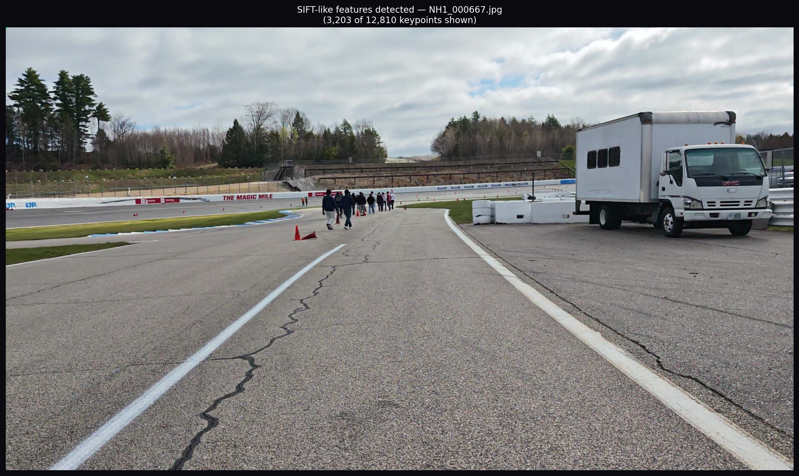
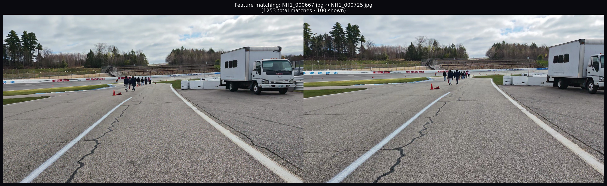
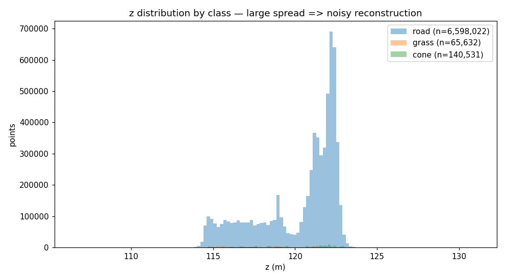
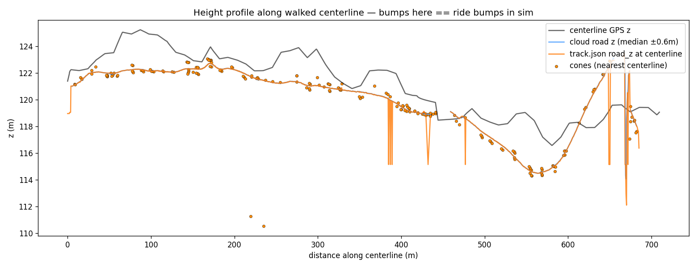

Input
Aextract
Frame Extraction + GPS Sync
ffmpeg · gpxpy
Two dashcam videos (NH1, NH2) are sampled at the target fps.
GPS coordinates from the GPX track are linearly interpolated per frame
and injected as EXIF overrides into each image's metadata — these
anchor the 3-D reconstruction to real-world ENU coordinates.
6 fps
~2,800 frames
2 video clips
→ images/ · exif_overrides.json · config.yaml

Raw dashcam frame — the input to the entire pipeline
Structure — OpenSfM (Docker)
Bsfm
Structure from Motion
OpenSfM · HAHOG features · GPS priors CPU
OpenSfM runs inside Docker, executing three sequential sub-stages:
B1 — detect_features
B2 — match_features
B3 — reconstruct
B1 extracts SIFT-like (HAHOG) keypoints from every frame.
B2 finds feature correspondences between overlapping frame pairs
using a vocabulary tree matcher — the green lines in the match visualization
are these correspondences. B3 incrementally estimates camera
poses and sparse 3-D points, anchored by GPS priors.
Two densification paths follow:
compute_depthmaps (CPU) or
export_openmvs → DensifyPointCloud (GPU/CUDA).
~1,262 shots registered
1.8 GB tracks.csv
2 recon components
CPU → reconstruction.json · undistorted/ · depthmaps/*.npz
GPU → reconstruction.json · undistorted/ · openmvs/scene_dense.ply

B1: HAHOG keypoints detected per frame

B2: Matching keypoints across frames

B3: Sparse 3-D reconstruction (top-down)
Labels (GPU)
Csemantic
Semantic Segmentation
Mask2Former-Swin · Cityscapes-150 GPU
Every undistorted frame runs through Mask2Former-Swin-Tiny
(
facebook/mask2former-swin-tiny-cityscapes-semantic), a
transformer-based panoptic segmentation model trained on Cityscapes-150.
Frames are processed in batches of 8 for GPU efficiency, with single-image
fallback on OOM. Each pixel is mapped to the 5-class project schema:
other (0), road (1), grass (2),
cone (3, stamped later), removed (4, vehicles/people).
150 Cityscapes classes
5 project classes
batch 8 frames
→ labels/*.npy (HxW uint8) · labels/*_vis.png (colourised PNG)

Mask2Former: original frame (left) · semantic labels (right) · grey=road, green=grass, red=removed
Point Cloud
Dcloud
Labeled Point Cloud Assembly
OpenSfM depth maps + semantic labels
GPU
CPU
Auto-detects which depth source is available and picks the best assembly path:
GPU OpenMVS PLY → k-NN camera voting
Dense depthmap back-projection
Sparse bundle-adjustment points
For dense paths: pixels are sampled on a stride grid and back-projected
using calibrated camera poses. Each 3-D point receives the semantic label
of the pixel it came from. All components are merged into one cloud.
~6.8 M road pts
~66 K grass pts
→ cloud.npz (xyz · rgb · cls · src)

Labeled cloud top-down — road=dark · grass=light · each pixel = labeled 3-D point
Objects
Econes
Cone Detection + Clustering
YOLO-World · DBSCAN · depth back-projection
YOLO-World (
yolov8s-world.pt, open-vocabulary detection)
finds traffic cones in every frame. Each 2-D detection box is
back-projected through the depth map to recover a 3-D position.
Observations across all frames are clustered with DBSCAN;
cluster centroids become the measured cone positions.
Each cone is stamped into the cloud as class 3,
producing cloud_with_cones.npz.
310 measured cones
≥2 obs threshold
0.75 m cluster radius
→ cone_detections.json · cones.json · cloud_with_cones.npz

Orange dots = measured cone positions (cluster centroids) stamped into the cloud
Export
Fexport
Track Export — Grid + OBJ Mesh
Grid rasterization · JSON / OBJ / MTL
The labeled cloud is rasterized onto a 0.35 m grid. Each cell is
classified as road, grass, or outside based on the dominant label
of its constituent points plus configurable road-buffer and grass-fill
margins.
track.json contains: grid bounds, road/grass
cell lists, measured cones with confidence scores, and a centerline hint.
track.obj/.mtl export a mesh for external tools.
78,740 road cells
132,955 grass cells
0.35 m cell size
→ track.json · track.obj · track.mtl

Road cells by elevation (left) · road/grass class map (right)
F2mesh
Vertex-Colored Mesh (Poisson)
Open3D · trimesh · Draco GLB
The labeled cloud is voxelized, filtered by density, and passed to
Open3D's Poisson surface reconstruction. Road and grass are separate
meshes with vertex colors; cones stay as instanced geometry from
track.json. Output is a Draco-compressed GLB
(track_mesh.glb) ready for the frontend.
Requires Python 3.10–3.12: uv sync --extra mesh.
≤200 K target triangles
0.05 m voxel size
Poisson depth 9
→ track_mesh.glb (vertex-colored GLB)
Labeled cloud → Open3D Poisson → track_mesh.glb
Gdiag
Diagnostics
matplotlib
Diagnostic plots verify reconstruction quality before trusting cone
measurements. Top-down class map with cone overlays confirms road
topology. Z-elevation histogram catches depth-map noise (wide spread =
noisy depth). Road height profile and grass height cloud heat maps
reveal surface artefacts. Large z-spread signals noisy depth maps
that will propagate into the point cloud.
→ diag/{topdown_classes, z_hist, height_profile, road_height_cloud, grass_height_cloud}.png

Top-down class map

Z-elevation histogram

Road height profile
Hsync
Frontend Sync + Simulator
React · Three.js / R3F · Vite
track.{json,obj,mtl,glb} are copied into
frontend/public/data/. The React simulator loads
track.json, renders road and grass as merged
BufferGeometry meshes, and cones as
InstancedMesh at exact measured positions.
A kinematic vehicle drives the track with surface-based grip
and cone-hit detection. Built-in cone editor lets you add, remove,
or knock over cones and export the edited track as JSON.
WebGL renderer
60 fps target
cone editor built-in
→ frontend/public/data/{track.json, track.obj, track.mtl, track_mesh.glb}
Loaded in Three.js — road cells, grass cells, cone positions, driven by WASD